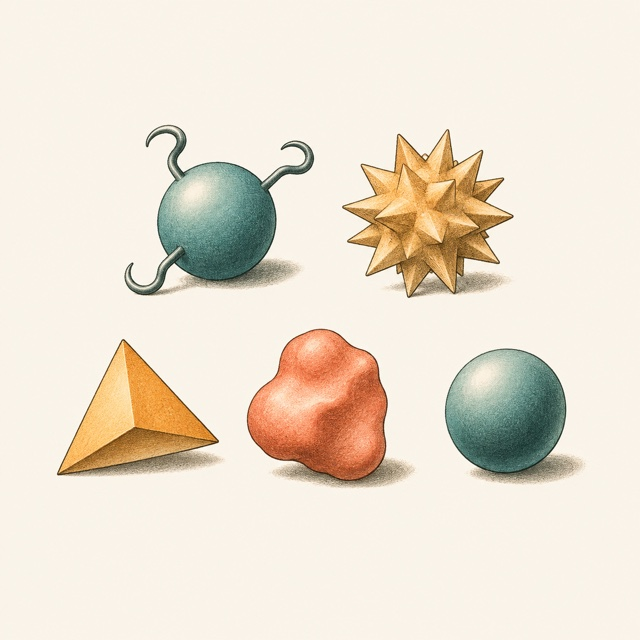
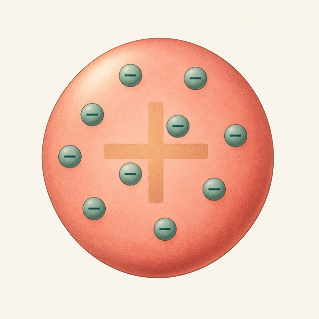
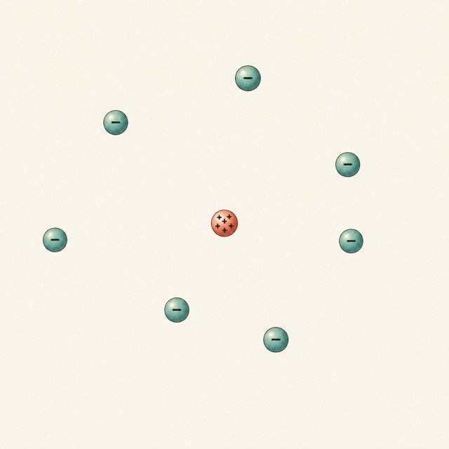
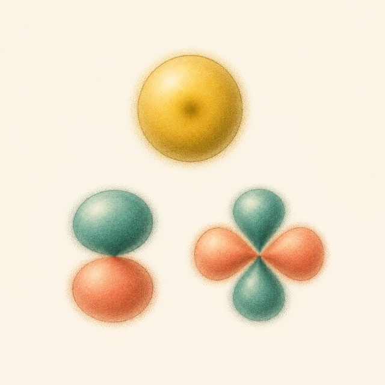

Με τι μοιάζει τελικά ένα άτομο;
Ανακάλυψε γιατί το πλανητικό μοντέλο είναι λανθασμένο.
Στο τέλος του μαθήματος, θα μπορείς:
- Να εξηγείς γιατί το πλανητικό μοντέλο αποτυγχάνει ως περιγραφή ενός σταθερού ατόμου.
- Να ερμηνεύεις τα νέφη και τις επιφάνειες του εργαστηρίου ως κατανομές πιθανότητας.
- Να συνδέεις τους κβαντικούς αριθμούς και τις πραγματικές κυματικές μορφές με τα σχήματα των τροχιακών.
- Να καταλάβεις πώς προκύπτει το σχήμα ενός ατόμου από την έννοια του στάσιμου κύματος
Ένα αιώνιο ερώτημα
Από τι αποτελείται ο κόσμος; Το ερώτημα αυτό απασχολεί τον άνθρωπο ήδη από τους αρχαίους χρόνους, ενώ μέχρι και σήμερα παραμένει ως επί το πλείστον αναπάντητο (όσο κι αν σας κάνει εντύπωση θα μάθετε το γιατί στο τέλος).
Κάθε λαός είχε τον δικό του κοσμογονικό μύθο σχετικά με την προέλευση του κόσμου και της ύλης. Αυτό όμως που πίστευαν ανεξαιρέτως όλοι οι άνθρωποι, από την Ινδία και την Κίνα μέχρι και την αρχαία Ελλάδα, ήταν πως η ανεξάντλητη ποικιλία των μορφών και των υλικών που βλέπουν τριγύρω τους είναι απατηλή.
Το σίδερο, το ξύλο, η πέτρα και τα σύννεφα, δεν είναι τόσο διαφορετικά όσο φαίνονται αφού όλα αποτελούνται τελικά από τα ίδια θεμελιώδη στοιχεία (μια λέξη που χρησιμοποιούμε ακόμα και σήμερα για τον ίδιο σκοπό). Γη, νερό, αέρας και φωτιά ήταν από τους δημοφιλέστερους υποψήφιους και ίσως να σκεφτεί κανείς ότι ήταν μια κάπως «πρωτόγονη» μαντεψιά.
Κάθε άλλο όμως, διότι αυτά τα στοιχεία αποτελούσαν στην ουσία τις αρχετυπικές μορφές των τριών καταστάσεων της ύλης (στερεό, υγρό, αέριο), καθώς και μια δύναμη που να μπορεί να μεταλλάσσει την μία στην άλλη. Ήταν μια πολύ εύλογη επέκταση της ανθρώπινης εμπειρίας.
Όμως, στην αρχαία Ελλάδα, μεταξύ άλλων, είχε διατυπωθεί και μια ακόμη υπόθεση. Μια υπόθεση που όχι απλώς δεν προέκυπτε από την εμπειρία των αισθήσεων αλλά ήταν και τελείως αντίθετη με αυτήν!
Η υπόθεση αυτή έλεγε πως η ύλη, παρόλο που στις αισθήσεις μας φαντάζει συνεχής και συμπαγής, στην πραγματικότητα έχει κοκκώδη υφή. Αποτελείται δηλαδή από πολυάριθμες αδιαίρετες οντότητες που ονομάστηκαν άτομα.
Αυτά ήταν τα «τούβλα» από τα οποία πίστευαν ότι ήταν χτισμένος ο κόσμος. Δεν ήξεραν όμως πόσα είδη ατόμων υπάρχουν, ποια ήταν η φύση και οι ιδιότητες του καθενός. Δεν ήξεραν ακόμα ούτε το σχήμα και το μέγεθός τους.
Απέδωσαν λοιπόν στα άτομα κάθε υλικού και τα αντίστοιχα χαρακτηριστικά. Τα άτομα του σιδήρου ήταν βαριά και σκληρά, εφοδιασμένα με άγκιστρα ώστε να συγκρατούνται πολύ γερά μεταξύ τους, τα άτομα του νερού σφαιρικά και λεία ώστε να γλιστρά εύκολα το ένα πάνω στο άλλο, ενώ του αλατιού κοφτερά και μυτερά, εξ ου και η ιδιαίτερή τους γεύση.

Η εικόνα του ατόμου στην κλασική εποχή έμοιαζε πιο πολύ με τη σύγχρονη εικόνα του χημικού μορίου.
Αν αγνοήσουμε τις εκάστοτε λεπτομέρειες, αυτές οι υποθέσεις έκρυβαν από πίσω την ίδια ιδέα: την πίστη στην απλότητα του κόσμου. Την πεποίθηση ότι πίσω από την ανεξιχνίαστη πολυπλοκότητα του σύμπαντος υπάρχει μια απλούστερη καλά κρυμμένη δομή, η οποία πρέπει να αναζητηθεί σε πιο μικροσκοπικό επίπεδο από αυτό που αντιλαμβάνονται οι αισθήσεις μας.
Δεν είχε δηλαδή απλώς τεθεί μία από τις πιο θεμελιώδεις ερωτήσεις στο δρόμο για την κατανόηση της Φύσης αλλά είχε δοθεί ταυτόχρονα και μια εξίσου εντυπωσιακή απάντηση.
O Richard Feynman αναφέρει χαρακτηριστικά ότι αν ποτέ συνέβαινε κάποιο κατακλυσμιαίο γεγονός τέτοιο ώστε να χανόταν ολόκληρη η ανθρώπινη γνώση πέραν μια πρότασης, τότε η πρόταση που θα έπρεπε πάση θυσία να διασωθεί είναι η ατομική υπόθεση, ότι
όλα τα πράγματα αποτελούνται από άτομα, μικρά σωματίδια σε αέναη κίνηση.
Για το μεγαλύτερο κομμάτι της ιστορίας, το ερώτημα «από τι αποτελείται ο κόσμος» άνηκε στην σφαίρα της φιλοσοφίας και της θεολογίας, γι’ αυτό και δεν αμφισβητήθηκαν οι ήδη υπάρχουσες απαντήσεις. Όσο για την ατομική υπόθεση, ήταν μια ιδέα που είχε γεννηθεί 2000 χρόνια πριν την ώρα της. Μόνο μετά την ανάπτυξη της επιστήμης μπόρεσε να γίνει μια συστηματική μελέτη των συστατικών που απαρτίζουν τον κόσμο μας.
Η ατομική θεωρία ξανά στο προσκήνιο
Στο τέλος του 18ου αιώνα είχαν διατυπωθεί από Γάλλους χημικούς δύο αρχές σχετικά με τις χημικές αντιδράσεις. Η πρώτη ήταν η Αρχή της διατήρησης της μάζας που διατυπώθηκε από τον Antoine Lavoisier και έλεγε ότι η μάζα των στοιχείων που εμπλέκονται σε μια αντίδραση παραμένει σταθερή.
Ο δεύτερος, που αποδείχθηκε για πρώτη φορά από τον Joseph Louis Proust, ήταν η Αρχή των σταθερών αναλογιών και έλεγε με λίγα λόγια ότι δύο ουσίες θα πρέπει να αντιδράσουν σε συγκεκριμένες αναλογίες για να δώσουν μια τρίτη, ενώ ό,τι περισσεύει μένει απ’ έξω.
Παραδείγματος χάρη, το υδρογόνο και το οξυγόνο πρέπει να αντιδράσουν σε μια αναλογία 2:1 για να δώσουν νερό. Αλλά και το αντίστροφο, η διάσπαση του νερού θα δώσει υδρογόνο και οξυγόνο σε αναλογίες πάλι 2:1.
Οι νόμοι αυτοί εξηγούνταν με τη μία αν κάποιος υπέθετε ότι η ύλη αποτελείται από αδιαίρετες οντότητες διαφορετικές για κάθε υλικό. Και πράγματι, ο Άγγλος επιστήμονας John Dalton δεν άργησε να κάνει μια τέτοια υπόθεση.
Πρότεινε λοιπόν ότι κάθε χημικό στοιχείο αποτελείται από πανομοιότυπα άτομα τα οποία δεν μπορούν να αλλοιωθούν και να καταστραφούν αλλά μπορούν να συνδυαστούν και να κολλήσουν μεταξύ τους σχηματίζοντας πιο πολύπλοκες δομές (τις γνωστές σε εμάς χημικές ενώσεις).
Την υπόθεση αυτή προσπάθησε να επιβεβαιώσει με αρκετά πειράματα στα οποία προσδιόρισε μάλιστα και το ατομικό βάρος αρκετών στοιχείων. Η βικτοριανή εικόνα για τα άτομα ήταν λοιπόν μικρές συμπαγείς σφαίρες διαφορετικού βάρους, μεγέθους, σχήματος (ή και χρώματος) για το κάθε στοιχείο.
Όλα καλά μέχρι εδώ, πόσα όμως διαφορετικά χημικά στοιχεία υπάρχουν στον κόσμο;
Με το πέρασμα των χρόνων η λίστα αυτή όλο και αυξανόταν καθώς οι επιστήμονες ανακάλυπταν διαρκώς στοιχεία με νέες ιδιότητες. Υπήρχε έντονη λοιπόν η ανάγκη να μπει μια τάξη σε αυτό το χάος.
Ήταν γνωστό πάντως ότι ορισμένα στοιχεία, κατά τα άλλα εντελώς διαφορετικά, εμφάνιζαν κοινές χημικές ιδιότητες. Εκμεταλλευόμενος αυτή τη συμμετρία ο Ρώσσος χημικός Dmitri Mendeleev παρατήρησε ότι αν τοποθετούσε τα στοιχεία κατά σειρά βάρους εμφάνιζαν μια περιοδικότητα στις χημικές τους ιδιότητες. Κατασκεύασε έτσι τον πρώτο αναγνωρίσιμο περιοδικό πίνακα των μέχρι τότε γνωστών χημικών στοιχείων προβλέποντας μέχρι και ορισμένες ιδιότητες μη ταυτοποιημένων ακόμα στοιχείων που επρόκειτο να γεμίσουν τα κενά που υπήρχαν.
Ο κόσμος, λοιπόν, όπως όλα έδειχναν στα μέσα του 19ου αιώνα, είχε τη δομή που οι αρχαίοι άνθρωποι είχαν μαντέψει. Η μόνη διαφορά ήταν ότι δεν αποτελούνταν από 4 αρχέγονα στοιχεία αλλά από 50 περίπου χημικά στοιχεία. Σήμερα ο αριθμός έχει φτάσει στα 118 - και ακόμα δεν είναι οριστικός.
Το άτομο αποκτά δομή
Η συμμετρία του περιοδικού πίνακα και τα επαναλαμβανόμενα μοτίβα που εμπεριείχε ήταν υποδείξεις πως τα διαφορετικά στοιχεία ίσως να μην είναι τόσο ξεχωριστά τελικά.
Ίσως υπάρχει κάποια βαθύτερη δομή που μέχρι τώρα δεν έχει αποκαλυφθεί. Ίσως τα χημικά στοιχεία να αποτελούνται από κοινούς δομικούς λίθους οι οποίοι θα πρέπει να αναζητηθούν στο μικροσκοπικό επίπεδο. Κάτι τέτοιο θα μπορούσε να εξηγήσει τις κοινές ιδιότητες που έχουν, άσχετα κατά τα άλλα, χημικά στοιχεία.
Η υποψία αυτή δεν άργησε να επιβεβαιωθεί με την ανακάλυψη του ηλεκτρονίου, του πρώτου πραγματικά στοιχειώδους σωματιδίου. Έτσι, η περιοδικότητα των χημικών στοιχείων εξηγήθηκε αβίαστα, αφού αυτό που καθόριζε τις κοινές χημικές τους ιδιότητες ήταν απλώς ο αριθμός των εξωτερικών ηλεκτρονίων. Το ηλεκτρόνιο ήταν ό,τι κοντινότερο στο άτομο που φαντάζονταν οι αρχαίοι Έλληνες ατομιστές, μια πραγματικά θεμελιώδης και αδιαίρετη οντότητα.
Πιο συγκεκριμένα, το 1897 στο εργαστήριο του Cavendish στο Cambridge ο φυσικός Sir Joseph John Thomson πειραματιζόμενος με καθοδικές ακτίνες συμπέρανε ότι τα ίδια τα άτομα αποτελούνται από μικρότερα σωματίδια.

Πρότεινε λοιπόν, για να περιγράψει τη δομή του ατόμου, ένα μοντέλο σύμφωνα με το οποίο τα ηλεκτρόνια ήταν κατανεμημένα πάνω σε μια συμπαγή σφαίρα, όπως οι σταφίδες στο σταφιδόψωμο.
Το μοντέλο του σταφιδόψωμου, όπως ονομάστηκε χάριν αυτής της αναλογίας, δεν έζησε για πολύ καιρό. Λιγότερο από μια δεκαετία αργότερα ήρθε η σειρά ενός άλλου φυσικού να το ανανεώσει.
Σε ένα από τα διασημότερα πειράματα στην ιστορία της φυσικής, ο Ernest Rutherford παρείχε ακλόνητες αποδείξεις ότι τα άτομα δεν είναι συμπαγείς σφαίρες αλλά ως επί το πλείστον κενός χώρος. Το μόνο που υπάρχει είναι ένας μικροσκοπικός πυρήνας γύρω από τον οποίο περιστρέφονται τα ηλεκτρόνια σε τροχιές, ακριβώς όπως οι πλανήτες γύρω από τον ήλιο.

Τόσο μικρός είναι μάλιστα ο πυρήνας που θα μπορούσε να παρομοιαστεί με μια μπάλα ποδοσφαίρου καταμεσής σε ένα άδειο γήπεδο, ενώ τα λιγοστά ηλεκτρόνια στριφογυρνάνε στις κερκίδες.
Ο δανός φυσικός Niels Bohr έδωσε μια ακόμα πιο ακριβή περιγραφή της δομής του ατόμου χρησιμοποιώντας και ένα ακόμη πειραματικό στοιχείο: το θερμό υδρογόνο εκπέμπει φως σε συγκεκριμένα μήκη κύματος. Το φάσμα του αποτελείται από διακριτές γραμμές. Ο Bohr πρότεινε ότι ο μόνος τρόπος να συμβαίνει κάτι τέτοιο είναι τα ηλεκτρόνια στα άτομα να βρίσκονται σε καθορισμένες ενεργειακές στάθμες αλλά όχι ενδιάμεσα ακόμα και όταν μεταβαίνουν από τη μία στην άλλη! Έτσι συνέδεσε την εκπομπή ή απορρόφηση φωτός με μεταβάσεις ανάμεσά στις ενεργειακές στάθμες-σκαλοπάτια.

Στο μοντέλο του λοιπόν, τα ηλεκτρόνια κινούνταν σε ορισμένες τροχιές γύρω από τον πυρήνα. Έτσι προέκυψε και η γνώριμη εικόνα του ατόμου σαν μικρού πλανητικού συστήματος. Το μοντέλο εξηγούσε σημαντικά χαρακτηριστικά του υδρογόνου, αλλά όπως θα δούμε απέχει αρκετά από την πραγματικότητα.
Από την τροχιά στο νέφος πιθανότητας
Η εικόνα του ηλεκτρονίου ως μικρής μπάλας που περιφέρεται γύρω από τον πυρήνα τελικά αποτυγχάνει. Στην κλασική ηλεκτροδυναμική, ένα φορτίο που επιταχύνεται σε κυκλική τροχιά ακτινοβολεί και χάνει ενέργεια. Μια τέτοια τροχιά δεν εξηγεί τη σταθερότητα του ατόμου - το άτομο δεν θα έπρεπε να υπάρχει!
Η έλευση της κβαντομηχανικής τροποποίησε το ατομικό μοντέλο, αντικαθιστώντας τις τροχιές των ηλεκτρονίων με τροχιακά και τα ίδια τα ηλεκτρόνια με νέφη πιθανότητας. Αντί να αποδίδουμε στο ηλεκτρόνιο μια κλασική τροχιά, περιγράφουμε την κατάστασή του με μια κυματοσυνάρτηση.
Φαντάσου πολλά άτομα υδρογόνου, προετοιμασμένα στην ίδια κατάσταση. Σε καθένα μετράς τη θέση του ηλεκτρονίου. Κάθε μέτρηση δίνει ένα σημείο. Αν τοποθετήσεις όλα τα σημεία στο ίδιο σχέδιο, εμφανίζεται μια κατανομή: κάποιες περιοχές γεμίζουν περισσότερο και άλλες λιγότερο. Η κυματοσυνάρτηση μάς δίνει την πυκνότητα πιθανότητας ανίχνευσης.

Η πιθανότητα να βρούμε το ηλεκτρόνιο σε μια μικρή περιοχή είναι περίπου η πυκνότητα πιθανότητας επί τον όγκο της. Το νέφος που σχεδιάζουμε είναι ένας χάρτης αυτής της πυκνότητας. Δεν είναι μια καταγραφή της τροχιάς του ηλεκτρονίου. Στο κυματικό μοντέλο του Schrödinger, ένα τροχιακό περιγράφει μια επιτρεπτή χωρική κυματοσυνάρτηση του ατόμου.
Οι κβαντικοί αριθμοί n, ℓ και m χαρακτηρίζουν την κατάσταση, συνδέοντάς τη με την ενέργεια και τη στροφορμή. Στις στάσιμες καταστάσεις η πυκνότητα πιθανότητας παραμένει σταθερή στον χρόνο. Ορισμένες καταστάσεις έχουν σφαιρική συμμετρία· άλλες εμφανίζουν λοβούς και κόμβους, περιοχές όπου η κυματοσυνάρτηση μηδενίζεται.
Αυτό σημαίνει ότι το άτομο δεν είναι ακριβώς εντελώς κενό τελικά. Ο πυρήνας καταλαμβάνει ελάχιστο μέρος της έκτασής του, αλλά ο γύρω χώρος περιγράφεται από την ηλεκτρονική κβαντική κατάσταση.
Από τις πλάκες που τραγουδούν στα ηλεκτρονικά κύματα
Για να αποκτήσεις μια ιδέα για αυτή τη γεωμετρία, ας ξεκινήσουμε από κύματα που μπορούμε να παρατηρήσουμε εύκολα.
Όταν μια μεταλλική πλάκα δονείται η άμμος στην επιφάνειά της αρχίζει να μετακινείται. Σε ορισμένες συχνότητες εμφανίζονται καθαρά σχήματα. Η άμμος συγκεντρώνεται κοντά στις γραμμές που μένουν ακίνητες, τους κόμβους, και φανερώνει τις στάσιμες μορφές της ταλάντωσης. Παρατήρησε πώς αλλάζει το μοτίβο καθώς αλλάζει η συχνότητα.
Η πλάκα μάς δίνει μια χρήσιμη γέφυρα: μια κυματική εξίσωση, μαζί με τις συνθήκες του συστήματος, επιτρέπει συγκεκριμένες χωρικές μορφές και κόμβους. Στο άτομο οι επιτρεπτές μορφές προκύπτουν από την κβαντική εξίσωση για το ηλεκτρόνιο στο πεδίο του πυρήνα. Η πλάκα και το άτομο υπακούουν σε διαφορετικές εξισώσεις· η αναλογία αφορά την εμφάνιση επιτρεπτών σχημάτων.
Πέρασε τώρα από την πλάκα στο υδρογόνο. Στο εργαστήριο που ακολουθεί, ξεκίνα με n = 1, ℓ = 0, m = 0 και την προβολή Fuzzy cloud. Περιστρέφοντας την εικόνα θα δεις ότι το νέφος έχει σφαιρική συμμετρία. Η περιστροφή αλλάζει τη θέση της κάμερας, ενώ η κατανομή παραμένει στάσιμη.
Τα − και + κάτω αριστερά αλλάζουν τους κβαντικούς αριθμούς. Στα χειριστήρια, τα Suggested real orbitals προσφέρουν μορφές όπως p_x, p_y και p_z. Οι πραγματικές μορφές με μη μηδενικό |m| συνδυάζουν καταστάσεις με αντίθετες τιμές του m, γι’ αυτό εμφανίζεται η ένδειξη ±m.
Με το Phase-colored surface βλέπεις επιφάνειες σταθερής πυκνότητας, με χρώματα που κωδικοποιούν τη φάση της ψ. Το περίγραμμα εξαρτάται από το ποσοστό πιθανότητας που επιλέγεις να περικλείει. Δεν είναι σκληρό σύνορο του ατόμου. Στο Point cloud, οι κουκκίδες είναι δείγματα από την ίδια κατανομή πιθανότητας.
- Στην πλάκα, η άμμος συγκεντρώνεται κοντά στους κόμβους. Στο ατομικό νέφος, τι περιμένεις να συμβαίνει με την πυκνότητα των σημείων κοντά σε έναν κόμβο της ψ; Εξήγησε γιατί οι δύο εικόνες εμφανίζονται διαφορετικές.
- Στο 1s, άλλαξε το Fuzziness. Παρατήρησε πώς αλλάζει η απεικόνιση ενώ διατηρείται η σφαιρική συμμετρία της κατανομής.
- Θέσε n = 2, ℓ = 1 και επίλεξε το πραγματικό p_z. Αναγνώρισε τους δύο λοβούς και το κομβικό επίπεδο ανάμεσά τους. Σύγκρινε τα p_x, p_y και p_z από την ίδια γωνία.
- Θέσε n = 3, ℓ = 2 και επίλεξε d_z². Περίστρεψε την εικόνα για να εντοπίσεις τους δύο λοβούς και τον δακτύλιο.
- Στο Phase-colored surface, αύξησε το Enclosed probability από 50% σε 90%. Γιατί μεγαλώνει η επιφάνεια, παρότι δεν άλλαξες την κβαντική κατάσταση;
- Στο Point cloud, αύξησε το Point density. Τα περισσότερα σημεία παριστάνουν περισσότερα ηλεκτρόνια μέσα στο ίδιο άτομο ή περισσότερα δείγματα πιθανών ανιχνεύσεων;
Και για τα υπόλοιπα άτομα;
Εδώ δυστυχώς κανείς δεν έχει να προσφέρει κάποια καλύτερη εικόνα, η κυματοσυνάρτηση του Ηλίου με δύο ηλεκτρόνια έχει 6 διαστάσεις και επειδή περιλαμβάνει τις αλληλεπιδράσεις μεταξύ τους δεν μπορεί να υπολογιστεί ακριβώς.
Συνήθως κάνουμε όμως την προσέγγιση ότι ξεκινάνε να γεμίζουν της καταστάσεις του υδρογόνου από την χαμηλότερη προς την υψηλότερη οπότε μάλλον το σχήμα τους είναι ένας συνδυασμός των σχημάτων που μπορείς να δεις στο εργαστήριο το ένα πάνω στο άλλο.
Πηγές
Το μάθημα αποτελεί ελληνική εκπαιδευτική διασκευή των παρακάτω πηγών. Τα δικαιώματα των πρωτοτύπων ανήκουν στους αντίστοιχους δημιουργούς.